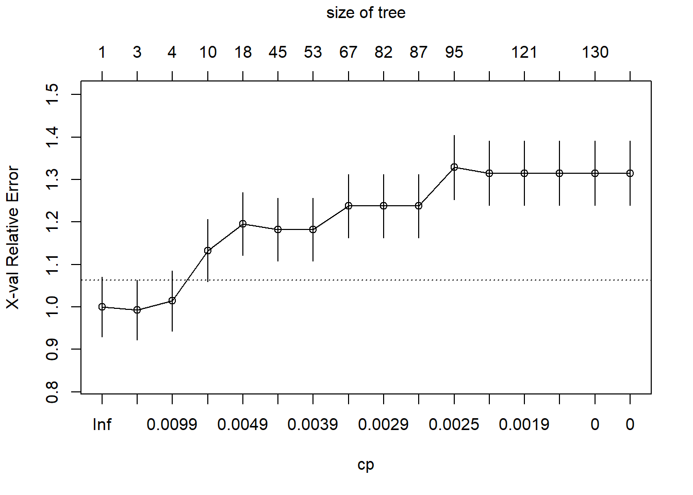

STATS5099 Data Mining and Machine Learning
1 Welcome to DMML Lab 4
In week 4, we have studied three tree-based methods, namely classification trees, bagging and random forests.
1.1 Classification trees
Classification trees can be implemented by using the rpart and rpart.plot packages. Some key codes are summarised below.
library(rpart); library(rpart.plot)
# build a tree for dataset 'Data' with features 'X1', 'X2' etc and class label 'Y'
Model <- rpart(Y~X1+X2+..., data=Data, method="class")
Model
# visualise the tree
rpart.plot(Model, type=2, extra=4) #check help page for more options about type and extra
# make predictions for new data with features 'Xnew'
Ynew.pred <- predict(Model, newdata=Xnew, type="class")One thing to be cautious when building the tree (or any classifier) is to avoid overfitting. This can be achieved by setting stopping criteria to prevent tree from growing, using arguments as listed below.
# set stopping criteria via 'control': smaller values of minsplit, minbucket and cp
# and larger value of maxdepth lead to a larger tree
Model2 <- rpart(Y~X1+X2+..., data=Data, method="class",
control=rpart.control(minsplit=20, minbucket=round(minsplit/3),
maxdepth = 30, cp=0.01))
#values are set as default1.2 Pruning
An alternative approach to avoid overfitting is by pruning. The idea of pruning is to first build a very large tree and then remove subtrees that carry less information. To determine how much of the tree should be pruned, we need to decide the appropriate value of cost complexity, which can be found by either looking at the cross-validation cost complexity plot or using the output of the xerror (cross-validation error) variable.
The R commands for producing the cross-validation cost complexity plot or table are listed below:
QUESTION: (Lecture note, task 3) For the fully grown tree printed below, compute:
the cross validation error rate when there are 9 splits in that tree;
the training data error rate when we do not have to prune the tree at all (i.e. after 178 splits).
##
## Classification tree:
## rpart(formula = Creditability ~ Age + Length_of_cur_employment +
## Purpose, data = train, method = "class", parms = list(split = "information"),
## cp = -1, minsplit = 2, minbucket = 1)
##
## Variables actually used in tree construction:
## [1] Age Length_of_cur_employment Purpose
##
## Root node error: 143/500 = 0.286
##
## n= 500
##
## CP nsplit rel error xerror xstd
## 1 0.0244755 0 1.00000 1.00000 0.070661
## 2 0.0139860 2 0.95105 0.99301 0.070512
## 3 0.0069930 3 0.93706 1.01399 0.070954
## 4 0.0052448 9 0.89510 1.13287 0.073180
## 5 0.0046620 17 0.85315 1.19580 0.074178
## 6 0.0043706 44 0.69930 1.18182 0.073967
## 7 0.0034965 52 0.66434 1.18182 0.073967
## 8 0.0031080 66 0.61538 1.23776 0.074777
## 9 0.0027972 81 0.56643 1.23776 0.074777
## 10 0.0026224 86 0.55245 1.23776 0.074777
## 11 0.0023310 94 0.53147 1.32867 0.075899
## 12 0.0021517 103 0.51049 1.31469 0.075742
## 13 0.0017483 120 0.46853 1.31469 0.075742
## 14 0.0013986 124 0.46154 1.31469 0.075742
## 15 0.0000000 129 0.45455 1.31469 0.075742
## 16 -1.0000000 178 0.45455 1.31469 0.075742
There are two strategies to choose the value of complexity parameter (and the corresponding tree size). The first option is to prune the tree back to the point where the cross-validated error is a minimum, known as the minimum error strategy. The second option is to prune the tree using the complexity parameter of the smallest tree that is within one standard deviation of the tree with the smallest xerror, known as the smallest tree strategy. In the case that there are multiple trees with the same xerror; we will choose the smaller one (since that tree would predict as well as the other one but it would also have fewer branches; thus we can also avoid overfitting).
1.3 Bagging and random forests
Bagging and random forests can be both implemented by using the randomForest function from the randomForest package. The difference is that in bagging, all features are used to build the tree for each bootstrapped sample, whereas in random forests, only a subset of features are used (set as the square root of all features by default).